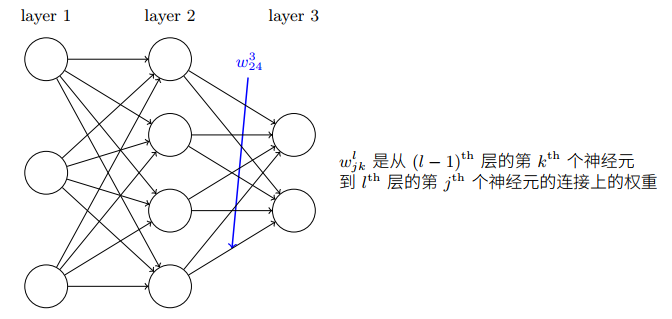
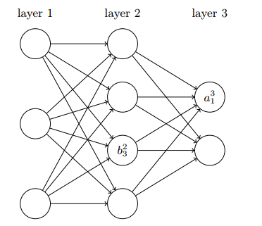

反向传播算法原理 发表于 2019-08-24 | 分类于 《神经网络与深度学习》 反向传播算法如何工作 网络权重的定义权重的定义$w_{jk}^l$表示从$(l-1)^{th}$层的$k^{th}$个神经元到$l^{th}$层的$j^{th}$个神经元的链接上的权重  偏置$b^l_j$表示$l^{th}$层第$j^{th}$个神经元的偏置 激活值$a^l_j$表示$l^{th}$层第$j^{th}$个神经元的激活值 